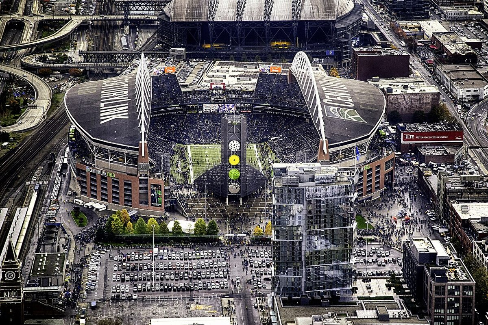

Cowherd Says Brock Purdy Is the Best Ever. Now Do It in Seattle.
The guy who picked us third now says Brock's the best quarterback who ever lived. I've waited four years to hear somebody say it on TV, and all I can think about is that the record gets set at Lumen Field.

My phone buzzed in the checkout line at Safeway Tuesday afternoon. No text, just a video from my buddy Dave. I hit play with a bag of limes in my other hand and there's Colin Cowherd, sitting at his desk, telling the whole country that by the advanced metrics Brock Purdy isn't only the best quarterback in the NFL. He's "the best quarterback ever."
I watched it twice. The lady behind me with the rotisserie chicken had to say excuse me.
You have to understand who's saying this. Before the season this is the same guy who said the Niners were "too old, too brittle" and would finish third in the division. Third! Last month he admitted Brock looked "as good as any quarterback in this league," which was him starting to crack. Now he's climbed all the way over the wall and planted a flag on the other side.
And my first reaction wasn't joy. It was, oh no.
Four years I've waited for somebody on national TV to say it
I've been on this hill since the Tampa game in 2022, and I've got the group chat receipts to prove it. System quarterback. Mr. Irrelevant. Game manager. Anybody could do it in that offense. I've heard every version from every cousin, coworker and radio caller in the 415, the 510 and the 650, and I've written about it more times than my wife thinks is healthy. If you want the long version, it's in why healthy Brock is the best quarterback in the league and the column where my brother finally folded.
So what changed for Cowherd? Four games. We're 4 and 0, and Brock's 79 of 113 for 1,007 yards with 11 touchdowns and one pick. That's a 126.2 passer rating, best in football. His QBR is 89.6, also best in football.
The one that got the TV guys going is expected points added per dropback, the stat the spreadsheet crowd actually trusts. Brock's at 0.53. The next quarterback in the league is Lamar Jackson at 0.29. That stat usually bunches everybody together like the 101 at five o'clock, and our guy's out in the carpool lane by himself with the windows down.
And nobody's touched him. Zero sacks in 113 throws. He's the first quarterback since Peyton Manning in 2005 to get through the first four games of a season without getting sacked once. Peyton Manning. I'll just let that sit there.
He did all that with guys dropping around him, too. Mike Evans left the Arizona game with his ribs, Trent went out with a stinger in the same game, and Brock still threw four touchdowns. Then Juice went down against Denver. I don't want to hear about the supporting cast this year. Half the supporting cast has been in the trainer's room.

And the record gets set in the worst building on earth
The part Cowherd skipped is the part I actually care about. Brock's career passer rating is 105.7. The league won't put you in the record book until you've thrown 1,500 passes, and he's at 1,466. Thirty four to go. Lamar's on top of the official list right now with a number in the 102s, and unless something truly ugly happens, Brock throws pass number 1,500 sometime Sunday afternoon and becomes the highest rated passer in the history of the NFL. The last pick of the 2022 draft. I keep typing that sentence and it still looks fake. I went deeper on how he got there on our Purdy stats and all time rankings page.
And where does it happen? Lumen Field.
The place that ran us out of the playoffs 41 to 6 in January. I turned that game off in the third quarter and went out and cleaned the garage at night, in the cold, because I needed something to do with my hands. Then Seattle went and won the whole thing, beat New England in the Super Bowl, and did it at Levi's. In our building. I'm still not over that, and I don't plan to be.
So now we go up there 4 and 0 and we're still about a field goal underdog against the champs. Kickoff's 1:25 on FOX. We're doing it without Juszczyk and his knee, which I already complained about. Honestly? I kind of like being the underdog. It feels more like us.
Okay, is he actually the best ever?
Look, I know how this sounds coming from a guy with a 13 jersey hanging on the closet door. I'm a homer. I'm admitting it right up front.
And no. Not yet. Best ever means rings, and longevity, and doing it for fifteen years. Joe has four. Tom Brady has seven. Brock has zero and an overtime loss to Kansas City in Las Vegas that I'm not discussing in this column or any other one. Passer rating's also a lot easier to rack up now than when Joe was playing in the wind at Candlestick, which is why every qualified quarterback above 100 for his career has played in the last decade. I'm not putting Brock over Joe Montana. I'm a homer, I'm not insane.
But the most efficient passer the league's ever officially counted, drafted 262nd, leading every efficiency number that matters a month into the year? That part's real. It's not a hot take. It's happening Sunday.
Vegas noticed, by the way. His MVP price went from 9 to 1 to a little over 3 to 1 in a week, second behind Josh Allen. If you didn't get in at 9 to 1, I'm sorry. I didn't either, and I've been yelling about him for four years. Make it make sense.
Please, Colin, stop talking
My problem with the whole country getting on the bandwagon is that the whole country getting on the bandwagon has never once gone well for us. Every time some national guy decides we're the best team in football, somebody's hamstring files for divorce the next week. I'm not saying Cowherd did anything wrong. I'm saying I'd have preferred he wait until Monday.
My plan for Sunday is simple. Same chair. Same jersey I haven't washed since Melbourne, and yes, my wife knows. Phone face down so Dave can't send me anything until it's over. Brock throws number 1,500, I yell, the dog leaves the room.
Then Cowherd can call him the best ever all he wants.
Every game this year lives on the 2026 49ers schedule hub, and the full list of who's banged up is on the 49ers injury report.
More coverage: 49ers · NFL · Bay Area Sports Blog home